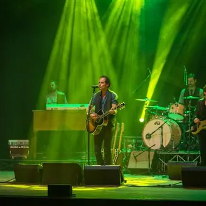

mar 17 nov · dalle 20:45
Blood Brothers - The Bruce Springsteen Show
INGRESSO: Intero 25,00 euro / Ridotto 20,00 euro The Bruce Springsteen Show è un tributo a Bruce Springsteen che si è imposto all’attenzione del pubblico in tutta Europa e non solo, tanto che negli ultimi anni ha ottenuto i complimenti dal produttore dell’ultimo album di Bruce…
 Indicazioni
Indicazioni
- Costi e prenotazioni
- Costo non indicato · Prenotazione non indicata
- Programma
- Programma da verificare. Apri la fonte ufficiale per orari e possibili aggiornamenti.
- In caso di maltempo
- Nessuna indicazione specifica pubblicata.
- Note
- Acquisito automaticamente dalla fonte.
L’EVENTO
Descrizione completa
Blood Brothers - The Bruce Springsteen Show
martedì 17 novembre 2026 ore 20.45
INGRESSO: Intero 25,00 euro / Ridotto 20,00 euro The Bruce Springsteen Show è un tributo a Bruce Springsteen che si è imposto all’attenzione del pubblico in tutta Europa e non solo, tanto che negli ultimi anni ha ottenuto i complimenti dal produttore dell’ultimo album di Bruce Springsteen e da due membri della E Street Band che da sempre accompagna il rocker americano
L’energia, la forza e la tenacia del più grande live performer del rock sono l’ispirazione dei Blood Brothers (band nata nel 2013 da un’idea di Francesco Zerbino) che in ogni dettaglio estetico, nella scelta degli strumenti musicali e nelle performance live ricercano lo stesso impatto esplosivo, per due ore di concerto non stop!
Blood Brothers è anche il titolo di una canzone di Bruce Springsteen e come le parole del testo, che parlano di una grande amicizia, così i componenti della Band sono uniti da un profondo legame.
Il repertorio propone i classici senza tempo tratti dagli album che hanno scritto la storia del Rock come Born To Run , Born In The Usa , Nebraska , The River , Darkness on The Edge of Town , senza tralasciare i più recenti The Rising o Wrecking Ball.
Francesco Zerbino – voce, chitarra
Luca Pasquadibisceglie – batteria
Alessandro Calabrò – basso
Jimmy Ciacchini – chitarra
Manuele Vanzi – piano, synth
Lorenzo Del Ghianda – organo, synth
Manuel Vanni – sax Acquista su Vivaticket
IL PROGRAMMA
Programma e orari
Appuntamenti raccolti dalle fonti elencate. Dove manca un orario, non è ancora disponibile in questa scheda.
Programma pubblicato
- Dal 2026-11-17 al 2026-11-17
INFORMAZIONI UTILI
Prima di partire
- Controllare la fonte prima di partire.
ORGANIZZAZIONE